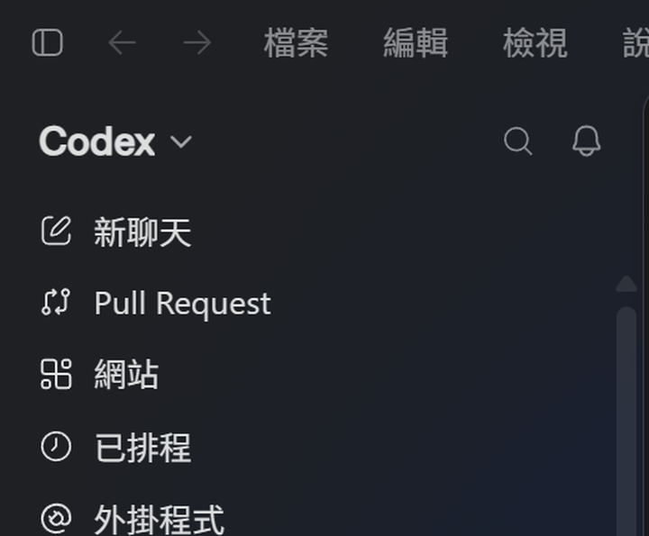
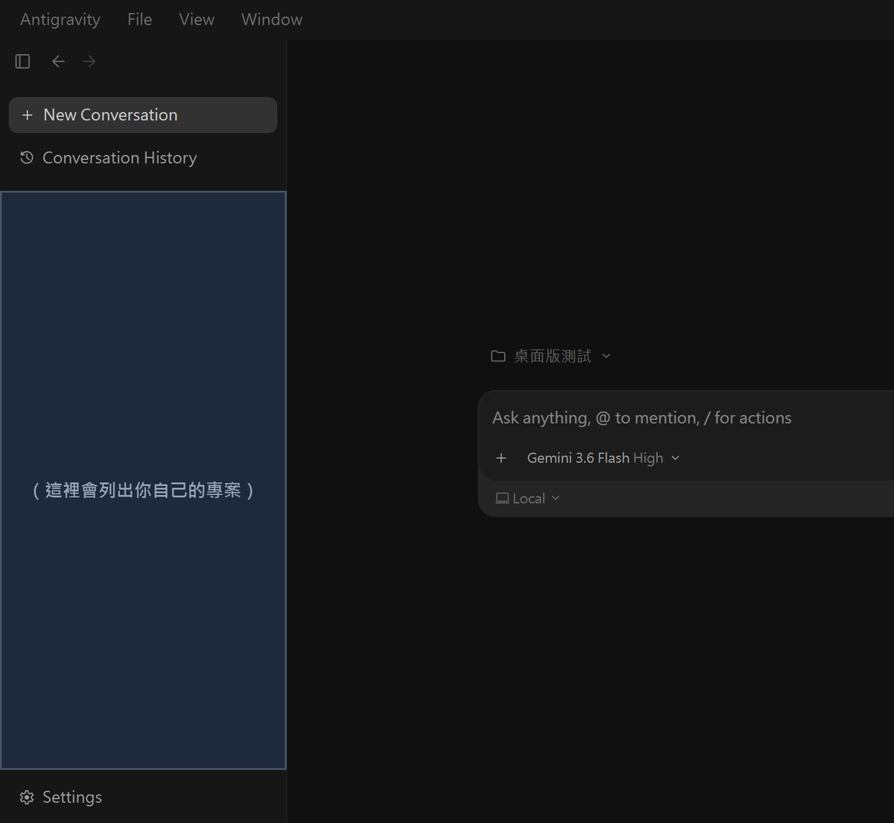
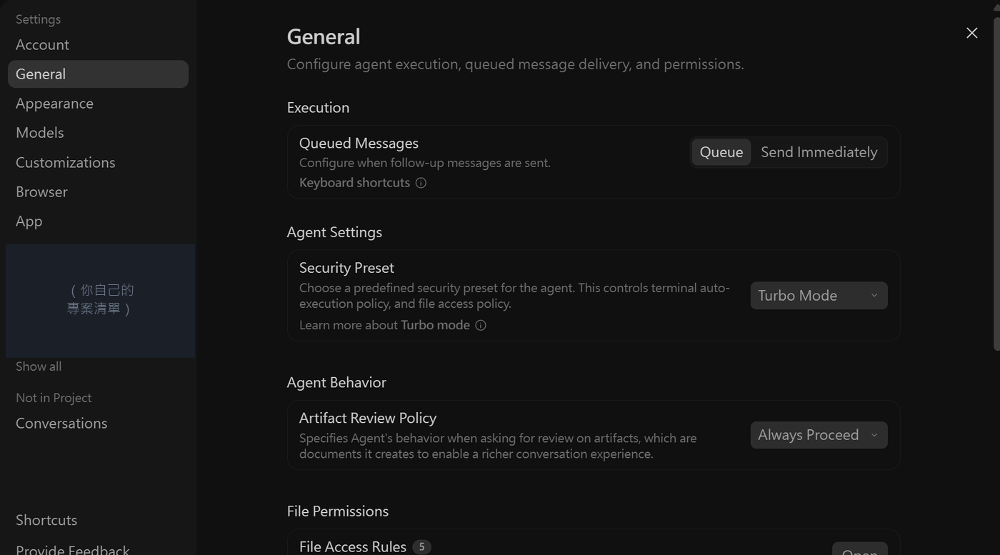
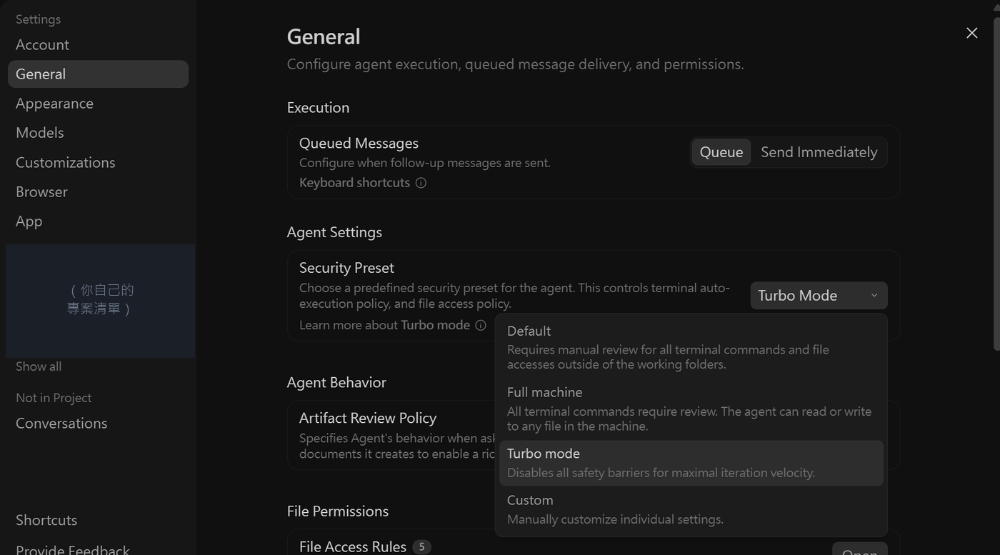
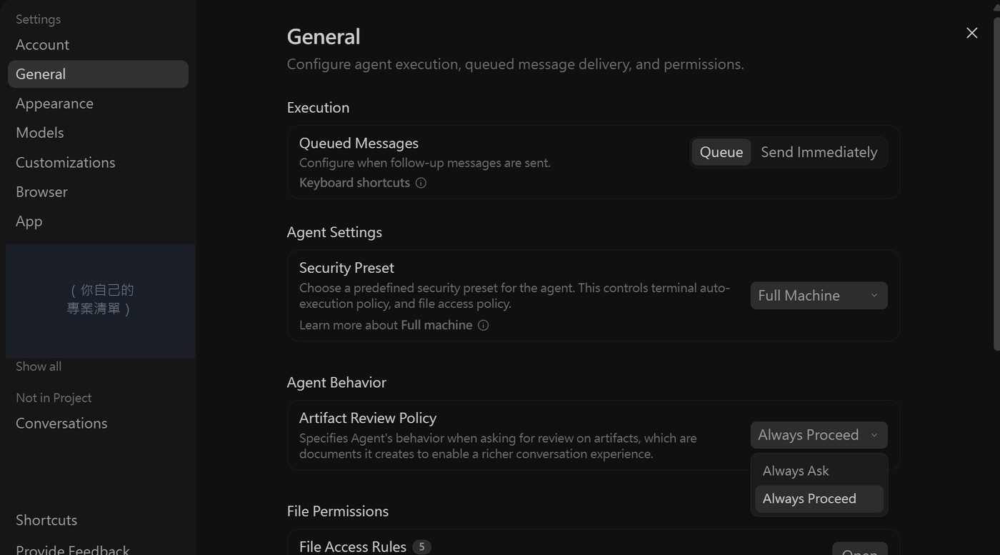

行前準備
8/19 之前，請先準備好這幾項
8/19 整堂課都在早上 09:00–12:00。最快的做法：先裝好兩個桌面版，打開 Codex 開一個新對話（先不要開專案），貼下面第一張卡。資料夾是它建的，不是你先選給它。 下面 01–08 是卡關時才一步一步對。GitHub／Git 有最好，沒裝仍請來。全部免費。
最快 你只做三下，其餘貼給 Codex
兩個桌面軟體要你自己從官網裝（要登入）。其餘先檢查已裝過的就跳過，缺的由 Codex 去官網裝，不要重裝。
下載頁請點一下藍色按鈕就好，不要連點。連點常被當成選字，看起來沒反應。
-
裝 ChatGPT 桌面版，用帳號登入後切到 Codex。沒有帳號就現場註冊，可以用 Google 帳號登入（建議用下面同一組個人 Gmail）。
開啟 ChatGPT 下載頁 -
裝 Antigravity 2.0 桌面版，用個人 Gmail 登入
開啟 Antigravity 下載頁 - 打開 ChatGPT 桌面版，切到 Codex，開一個新對話，先不要開專案。貼下面第一張卡。它會在「文件」建立 club2026。看它印出的路徑，再開新專案選這個資料夾，再用下面「你是誰」那張卡。
請幫我準備 8/19 研習要用的教材。 先不要改教材網頁。有的就沿用，不要重裝、不要覆蓋。缺的請你幫我裝。 只能用下面列出的官方網站，別的網址不要用。 要管理員密碼或要我去瀏覽器登入時，再一步一步告訴我。 請先檢查，結果照實寫，版本號不要自己編： - 「文件」裡有沒有名叫 club2026 的資料夾？ - 請跑 agy --version - 請跑 git --version - 請跑 gh auth status 接著只補沒有的： 1. 請在「文件」建立 club2026。已經有同名資料夾就用現成的，不要覆蓋裡面的東西。 不要放在 OneDrive、iCloud、Google 雲端硬碟或 Dropbox。 若 club2026 裡還沒有 index.html，教材只從 https://github.com/cwstedctw/sci-club-toolkit 下載或 clone。 已經有 index.html 就不要重抓。 2. 沒有 outputs、specs，就建空資料夾。 3. 根目錄缺哪一份，就從 templates/ 複製哪一份；已經有的不要覆蓋： PROJECT-README.md、HANDOFF.md、LEARNER-RULES.md、領隊-洄瀾.md、隊員-秀姑巒.md 4. agy --version 跑不出來：請幫我裝官方的 Antigravity CLI，網址開頭必須是 antigravity.google。 5. git --version 跑不出來：請幫我裝官方 Git，網站是 git-scm.com。若需要管理員權限，先告訴我。 6. 找不到 gh 或還沒登入：請幫我裝官方 GitHub CLI，網站是 cli.github.com，再帶我登入。要我去瀏覽器按的那一下，請講清楚。 最後列一張表：哪些本來就有、哪些剛裝好、哪些還要我按登入或允許。 並寫出 club2026 的完整路徑，請我接著開「新專案」，選這個資料夾，不要選到上一層。
登入、允許安裝、學校電腦的管理員密碼，仍要你自己按。
選好專案之後，開新對話問一次
選好 club2026 之後，開新對話只問「你是誰」。對了：Codex 說「我是洄瀾」，agy 說「我是秀姑巒」，都先講中文。
你是誰？
- 它該說
- 我是洄瀾。
你是誰？
- 它該說
- 我是秀姑巒。
01 ChatGPT 帳號
ChatGPT 桌面版與網頁版都要先有帳號才能用。可以用 Google 帳號登入，不必另設一組密碼。免費方案就夠，不必升級付費。
- 到 chatgpt.com 註冊或登入（有帳號就跳過）
- 登入時可選「繼續使用 Google」，建議用下一項的個人 Gmail，之後 Antigravity 也用同一組
- 用瀏覽器登入一次，確認進得去、看得到自己的名字
02 個人 Gmail（@gmail.com）
Antigravity 要用它登入。這是整份清單裡最常出問題的一項。
- 年齡要滿 18 歲並通過驗證，這是 Google 的規定
03 ChatGPT 桌面版 → 開啟 Codex
8/19 上半場你主要跟它講話：它先想規格，再自己呼叫 agy 做檔案，最後再讀成品挑錯。
- 到 chatgpt.com/download 下載安裝
- 打開後要登入帳號。可以用 Google 帳號（建議同一組個人 Gmail），或用 01 已經註冊好的 ChatGPT 帳號
- 打開 ChatGPT 桌面版後，選擇 Codex，再開始一個新任務。不同版本的位置可能會調整；請找「Codex」名稱，不要只靠這張截圖認位置。

04 Antigravity 2.0（桌面版）
下半場你直接在這個桌面版裡做完。上半場真正動手的是下一節的 agy 指令列，由 Codex 去叫它。
- 只從 antigravity.google/download 下載
- 頁面上有好幾樣東西，這一節請先裝 Antigravity 2.0（桌面版）。
同一頁往下捲還有 CLI，下一節再用 Codex 幫你裝。這裡不要先選 CLI。 - 用 02 的個人 Gmail 登入
| Windows | 10 以上、64 位元 |
|---|---|
| Mac | macOS 12 以上。官方下載頁目前同時列出 Apple Silicon 與 Intel 按鈕，但需求文字又寫「X86 不支援」，兩段資訊彼此矛盾。Intel Mac 請在行前實際安裝並通過開課前檢查；無法通過就改帶 Windows 或 Apple Silicon 筆電。 |
agy 讓 Codex 叫得動 agy
上半場你只跟 Codex 講話，它自己在終端機呼叫 agy 去做檔案。 沒有這條指令，Codex 只能停下來請你複製貼上。
我的電腦是 ⟨Windows 或 Mac⟩。 請幫我安裝官方的 Antigravity CLI，裝完終端機要打得動 agy 這個指令。 規則： 1. 只准用官網。安裝說明在 antigravity.google/docs/cli/install，下載頁在 antigravity.google/download。網址開頭不是 antigravity.google 就停下來問我。 2. 裝在我的使用者資料夾，不要要系統管理員權限。 3. 若要跑安裝指令，先把完整指令秀給我看，等我同意再跑。 4. 裝完請新開一個終端機，跑 agy --version，把完整輸出貼給我。不要自己編版本號。 5. 若要我去瀏覽器登入或按允許，一步一步講，等我做好再繼續。
這一項跟前面的 GitHub CLI 不是同一個東西。GitHub CLI 的指令是 gh；這裡要的是 agy。
05 Antigravity 裝好之後，要調的設定
先認得兩個安全設定。初學者不必為了省幾次確認就放寬整台電腦的權限； 8/19 建議保留 Default，並把產出審核設成 Always Ask。
設定在哪裡：視窗左下角的 Settings（齒輪圖示）， 或直接按 Ctrl + ,（逗號）。

點進去之後選左邊的 General，往下找 Agent Settings：

要改的第一個：Security Preset（安全等級）

| Default 🌟 初學者建議保留 |
官方寫：工作資料夾以外的檔案存取、以及所有終端機指令，都要人工審核。 → 會多幾次確認，但能把權限限制在你指定的工作範圍，適合第一次使用。 |
|---|---|
| Full machine | AI 可以讀寫這台電腦上的任何檔案。終端機指令雖仍可能要求審核，不代表每一次檔案讀寫都會先問你。 → 這堂課不需要整台電腦權限，初學者不要選。 |
| Turbo mode | 官方寫：關閉所有安全屏障，換取最快的速度。 → 不要選。你會不知道它對你的電腦做了什麼。 |
| Custom | 自己一項一項設。新手用不到。 |
要改的第二個：Artifact Review Policy（產出審核）

| Always Ask 🌟 建議選這個 |
它在提出「工作計畫」「修改對照」這類文件時，會先停下來讓你看過再繼續。 → 多一個看得到它在想什麼的機會。 ⚠️ 但這不等於「每個檔案寫進去之前都會問你」——它管的是那些給你看的說明文件， 不是所有的檔案動作。真正的把關還是你自己看成品。 |
|---|---|
| Always Proceed | 做完就繼續，不等你看。熟了之後再換。 |
上面的截圖與英文原文是 2026/8/12 在我們自己的 Windows 機器上拍的（Antigravity 桌面版）。 這兩個選項的完整說明，奕鈞老師整理得非常詳細，想看每個選單逐項對照可以看他的 Google Antigravity 系統設定全攻略。 如果你打開看到的跟這裡不一樣，以你畫面上的為準，並跟我們說一聲，這頁會更新。
06 GitHub 帳號
GitHub 不只是拿來部署網站。它是專案的接力站：保留每次修改的版本，也讓另一台電腦取回同一個 repo。repo 裡的專案記憶、規格與作品會一起帶過去。
- 到 github.com 註冊，免費
- 用 02 的個人 Gmail 註冊，跟 Antigravity 同一個比較好記
- 信箱會收到一封驗證信，點一下就完成
07 Git ＋ GitHub CLI（會後留下版本才用；GitHub Desktop 選配）
Git 負責版本紀錄；GitHub CLI 讓 AI 登入並操作 GitHub。早上現場不必有這兩樣，也能做完課程規劃表。會後要留版本、換電腦接著做，再裝也來得及。有最好。GitHub Desktop 是有畫面的選配。
| Windows | 到 git-scm.com 下載，安裝時一路按 Next 就好，那些選項不用看懂。 如果出現管理員權限提示，請在自己的筆電確認後再允許；學校配發且被鎖定的電腦，請找資訊組協助。 |
|---|---|
| Mac | 多半已經內建。沒有的話，第一次用到時系統會自己跳出安裝提示，按同意就好。 |
怎麼驗收：打開 Codex，貼這一句給它：
幫我確認這台電腦的 git 裝好了沒，跑一次 git --version 把結果給我
還要裝一個：GitHub CLI（讓 AI 能登入並操作 GitHub）
剛才那個 Git 負責記版本與傳送檔案；要讓 AI 登入 GitHub、建立 repo，再把整套流程接起來，還需要這個工具。
- 到 cli.github.com 下載安裝（Windows 一路 Next）
- 裝完要登入一次：在 Codex 裡貼下面這句
幫我跑 gh auth login，讓我登入 GitHub。 過程中如果要我去瀏覽器貼一組代碼，把那組代碼清楚地告訴我。
最後一個（加分）：GitHub Desktop（有畫面的那個）
上面那個 Git 是給 AI 用的（它在背後跑指令）。 GitHub Desktop 是給你自己看的——有畫面、有按鈕，可以看到「我改了哪些檔案」「上次是什麼時候傳的」。
- 到 desktop.github.com 下載安裝
- 用第 06 項的 GitHub 帳號登入
若要照留下版本 的提示詞讓 AI 自動留版本、上傳、下載並跨機器接手，就需要指令版的 Git 與已登入的 GitHub CLI。
Desktop 的價值在你自己看得見：它改了哪些檔案、上次什麼時候傳的，一眼就懂。
08 教材包與一個資料夾
上半場只要 Codex 開這個資料夾，它才叫得動 agy、也才找得到教材。下半場再另外用 Antigravity 桌面版開同一個位置。AI 代理就是能讀取整個專案資料夾、依步驟做事並回報結果的 AI，不只是回答一則聊天訊息。
- 教材有兩個來源，用一個就好：網站 github.com/cwstedctw/sci-club-toolkit → 綠色 Code → Download ZIP；或行前信／主辦發的教材包（官方原件在 OneDrive 活動夾的「官方文件」，不放進這個公開網站）。你已經在解壓後的教材裡看到這一頁，就略過下載。
- 先解壓縮，不要直接在 ZIP 裡操作。Windows 用右鍵「解壓縮全部」；Mac 雙擊 ZIP，Finder 會建立解壓縮後的資料夾。
- 在本機建立一個英文資料夾，例如 club2026。Windows 用檔案總管；Mac 用 Finder。若位置會自動同步到 OneDrive、iCloud Drive、Google 雲端硬碟或 Dropbox，請換到不會自動同步的位置。
- 把解壓縮後的教材內容複製進 club2026。Windows 用 Ctrl+A／Ctrl+C／Ctrl+V；Mac 用 Command+A／Command+C／Command+V。完成後，index.html、style.css、app.js 應直接出現在 club2026，不必再點進第二層。
- 在 club2026 新增 outputs 與 specs。作品放 outputs，每關確認過的規格放 specs，都不得覆蓋教材首頁。
- 把 templates 裡的學員檔複製到 club2026 根目錄：PROJECT-README.md、HANDOFF.md、LEARNER-RULES.md，以及兩份角色檔 領隊-洄瀾.md、隊員-秀姑巒.md。Codex 是洄瀾、agy 是秀姑巒。想換名字再改檔即可。
- 依 sources/README.md 準備五類原件，保留原副檔名並使用固定開頭：01-official-result-template.*、02-foundation-consensus-slides.*、03-school-plan-deidentified.*、04-school-calendar.*、05-school-reimbursement-blank.*。
- 官方成果範本與共識營簡報應來自行前信、主辦單位共用資料夾或基金會確認來源；本校計畫、行事曆與核銷空白表由本校承辦人或主計室提供。這個 repo 沒有附未授權原件。
- 缺官方成果範本時，課程規劃表、名單與出席、學生回饋單、結案 只能用虛構資料練習；缺共識營簡報或本校核銷空白表時，核銷對帳 只能練習。缺檔時不准宣稱工具符合正式欄位或可直接送件。
- 用 Codex 打開整個 club2026 資料夾，不要只上傳其中一份檔案。下半場再用 Antigravity 桌面版開同一個完整位置。
另外別放在桌面的雲端同步資料夾裡（OneDrive、Google 雲端硬碟那種），同步會跟 AI 搶檔案。
後面有些驗收或跨機器步驟會用到「完整路徑」。那不是資料夾的名字， 而是像 Windows 的 C:\Users\你的名字\Documents\club2026，或 Mac 的 /Users/你的帳號/Documents/club2026 這樣一整串。
Windows：打開檔案總管、進到資料夾，點上方網址列，再按 Ctrl+A、Ctrl+C。
Mac：在 Finder 選取 club2026 資料夾，按 Option+Command+C 複製完整路徑。
這條路徑主要拿來核對兩個工具開的是同一個位置。真正開專案時，請使用工具裡的資料夾圖示或目前專案位置，選取整個資料夾；不要把資料夾拖進聊天視窗，避免它只被當成附件。
最後：出門前對一次
這裡只確認安裝與登入。全部勾完後，再到開課前檢查做一次 60 秒讀檔測試；測試提示詞只放在那一頁，不在兩頁重複。
01–05、agy、08 請在進場前勾完。06、07 沒勾仍可上完早上這堂，會後要「留下版本」再補。沒有安裝權限請找資訊組或改帶自己的筆電。
已完成 0 / 14 項
勾選狀態存在你自己的瀏覽器裡，換一台電腦就要重勾。
卡住怎麼辦
標準解法只有一句話：把畫面上的錯誤訊息，整段複製貼給你的 AI。
我在裝軟體的時候卡住了，這是畫面上的錯誤訊息： ⟨在這裡整段貼上⟩ 請用我聽得懂的話告訴我這是什麼意思，然後給我下一步該做什麼。
「可是我就是卡在裝 AI，哪來的 AI 可以問？」
兩種情況，各有解法：
- 兩個都還沒裝好 → 用手機或電腦的瀏覽器，打開 chatgpt.com 的網頁版。網頁版不用安裝、免費就能用， 把錯誤訊息貼進去問一樣有效。
- 裝好一個、另一個卡住 → 就問裝好的那個。 它答不出來也沒關係，至少會告訴你那行字在說什麼。
順帶一提，這一步本身就是在練習：把看不懂的東西丟給 AI， 是這門課從頭到尾都在教的事。你在行前先練一次，當天會順很多。
還是不行的話：
- 當天提早 20 分鐘到，現場有人幫你看
- 真的裝不起來，現場有做好的範例檔可以直接用，一樣做得完三樣東西